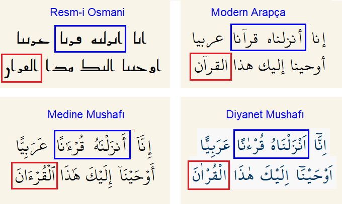

Bu sayfadaki örneklerin hepsinde anlamı ve okunuşu etkilemeyen minik imlâ farkları var. Bu farklar bütün mushaflarda titizlikle korunmuş; o ayette öyle yazılmış, bu ayette böyle... Sığ bir bakışla "tutarsızlık" olarak görülen bu farkların derin bir anlamı var: Kurân-ı Kerim, hattatların keyfine göre yazılmamış, her kâtibin uymak zorunda olduğu ince kurallar var.
Kur'an-ı Kerim esasında sözlü bir bildiridir.
Söz önemli ama Peygamber Efendimiz (Sallallahu
aleyhi ve sellem) zamanında yazıya da geçmiştir.
Çeşitli yerlere, bir kaç ayet şuraya, birkaç
ayet buraya yazılmış ve bir kitap olarak toplanmamış.
Birinci halife Hz Ebubekir yazılı ayetleri toplamış ve bir
mushaf haline getirmiş. Daha sonra üçüncü halife Hz Osman zamanında
(Peygamber Efendimizden 20 sene sonra) çoğaltılmış ve
nasıl yazıldıysa öylece korunmuş.
Öylece korunmuş olduğuna dair bazı çarpıcı örnekler göstereceğim.
Anlam değişmiyor, okunuş değişmiyor ama yazımda çok ufak farklar var.
"Artık bu kadarı da korunur mu!" diyeceksiniz. Hakikaten korunuyor.
Hz Musa Tur Dağında ilâhi kelâma muhatap olduktan sonra elinde On Emir levhası ile kavmine döndüğünde korkunç bir manzara gördü. İsrailoğulları bir buzağı heykelini tanrı edinmiş ona tapıyordu! Yerine vekil bıraktığı kardeşi Harun'un sakalından tutup çekiştirdi ve açıklama istedi. Kitabımızda iki yerde anlatılan bu olayda Hz Harun'un cevabındaki hitap ilginç. Birinde "annemin oğlu" iki kelime, diğerinde tek kelime: "Ey anamoğlu".
Ne fark eder? Hiç... Çünkü okunuşu da, anlamı da aynı. Ama imlâdaki küçük ayrıntı aynen korunmuş. A'râf suresinde iki kelimeyi bir boşluk ayırırken, Tâhâ suresinde tek kelime, ayrıca başına hitap belirten bir Ye harfi eklenmiş. Birleştirilen üç kelimede birer elif gizlenmiş. Elbette öyle de olur böyle de. Ama mushaflarda bu minik ayrıntının titizlikle korunduğunu görüyoruz.
erzel (en düşkün) kelimesi 4 ayette geçiyor, bunların ikisi 'umur (ömür) ile tamlama yapmış. İki ayet arasındaki yazım farkı pek dikkati çekmiyor: likeylâ bir ayette bitişik, diğerinde ayrı yazılmış. Anlam tamamen aynı, ama bu fark da bütün mushaflarda korunmuş. İkinci ayette fazladan görülen min kelimesi de anlamı çok etkilemiyor: Türkçe "sonra" ve "sonradan" farkı kadar...
Bunun benzeri diğer dillerde var mı? Elbette. Mesela "birkaç" kelimesi arada boşlukla "bir kaç" şeklinde yazılırsa, kaç kişinin dikkatini çeker? Anlama ne etkisi olur?
Nimet kelimesi Kitabımızda 50 ayette geçiyor. Bu kelimelerin yaklaşık yarısı kapalı Te merbûta ile yazılmış, diğerlerinde ise son harf açık Te ile yazılmış. Okunuşunu ya da anlamını değiştirmeyen bu ayrıntı bile bütün mushaflarda korunuyor. Örnek olarak, kelimenin bi edatıyla kullanıldığı ardışık iki ayete yakından bakalım.
"Ne önemi var, kâtiplerin tercihi" demek bu ayrıntıyı açıklamıyor. Çünkü tercih olsaydı yazıcıların kimisi şunu kimisi bunu seçerdi. Dikkatle incelersek şunu gözlüyoruz: Nimet kelimesinin iki farklı imlâsı var, ama 50 ayetin herbiri için hangi imlânın seçildiği keyfi değil, standart olmuş ve tedavüldeki her mushaf bu standarda uygun yazılmış. Özellikle, Nahl suresinin iki ayetinde biri öyle biri böyle yazılmış. Yan yana iki ayette "kâtip hatası" olabilir mi? Muhtelif Kur'an sitelerinden bu iki ayetin son 3-4 kelimesini bir tablo halinde topladım. Bütün görünüş (font ve renk) farkına rağmen, açık ve kapalı Te ayrıntısının söz konusu iki ayette muhafaza edildiğini açıkça görebilirsiniz.
Aşağıdaki üçüncü referans, 2019'da yayınlanan bir makale. Hollanda'da yapılan bu araştırma, "ni'metullâh" kelimesinden başlayarak, erken dönem bütün mushafların aynı kaynaktan kopyalandığını açıkça gösteriyor.
Resm-i Osmanî -- Hz Osman zamanındaki noktasız ve harekesiz imlâ
Modern Arapça -- Harfleri ayırdeden noktalar var, harekeler yok (Metin aramayı kolaylaştıran bir imlâ, Kur'an bu şekilde yazılmaz)
Medine Mushafı -- Dünyanın hemen her yerinde okunan uluslarüstü imlâ (hemzeler, noktalar ve harekeler silinirse Resm-i Osmanî ile aynı)
Diyanet Mushafı -- Türkiye'de okunan, nisbeten modern Ali el-Kārî (ö. 1605) imlâsı

Qur-ân kelimesinin iki imlâsı var: 68 ayette elifle, iki ayette elifsiz yazılır. Yusuf suresinin ard arda iki ayetinde iki farklı imlâyı görebilirsiniz. Harekesiz yazılan modern Arapçada bu fark ortadan kalkmış, lakin mushaflarda aynen korunmuş.
Keyfi değil, "bu ayet elifle yazılır, şu ayet elifsiz" şeklinde belirlenmiş ve (Türkiye dahil) bütün dünyada öyle yazılıyor. Okunuşu etkilemediği için, hiç kimse o eliflerin farkına varmıyor. Hattatlar bile farkında olmadan kopyalıyor belki... Ancak erbâbı biliyor. Anlamı da etkilemiyorsa neden bu ayrıntı?
Sonuç
İlâhi koruma altında olan Yüce Kitabımızın sadece metni değil, imlâsı da olağanüstüstü bir titizlikle korunuyor. Ayetlerin indirilişi zamanında vahiy kâtipleri tarafından nasıl yazıldıysa aynen muhafaza edilmiş.
Bu sayfadaki örnekler 1446 Ramazan ayında (Mart 2025)
Iqra -- Okuyun mail grubunda günlük olarak yayınlanmıştı.
Konu şu sayfada daha ayrıntılı anlatılıyor.